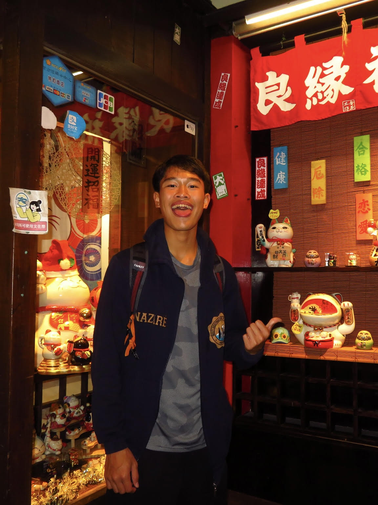

Hunter Lam
Westminster, California Chapter Outreach Coordinator
As of now, I'm a sophomore at Westminster High School, serving as the Outreach Coordinator for Hearts for Healing this term.
Primarily, I describe myself as a dedicated and hardworking individual, both inside and outside of school; however, I can also be very lively and outgoing.
Some of my other passions consist of running, playing tennis, performing on the piano, hiking, chess, and fishing.